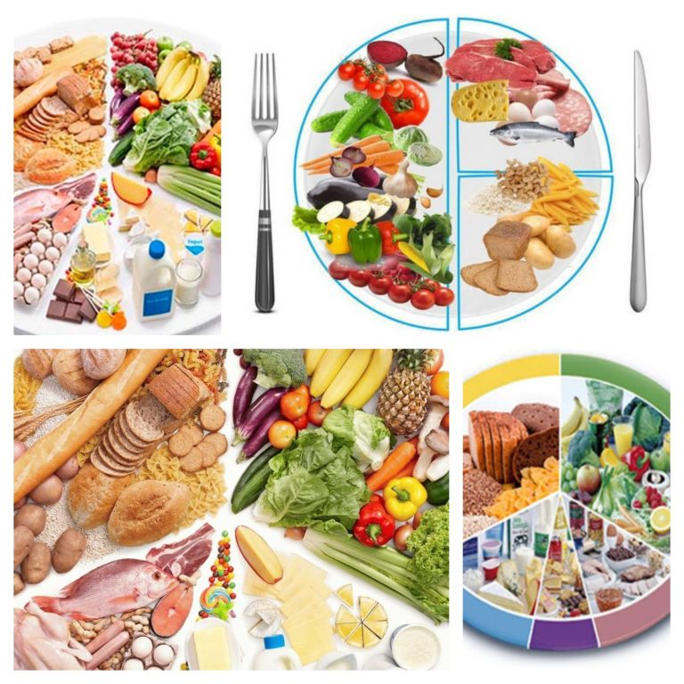
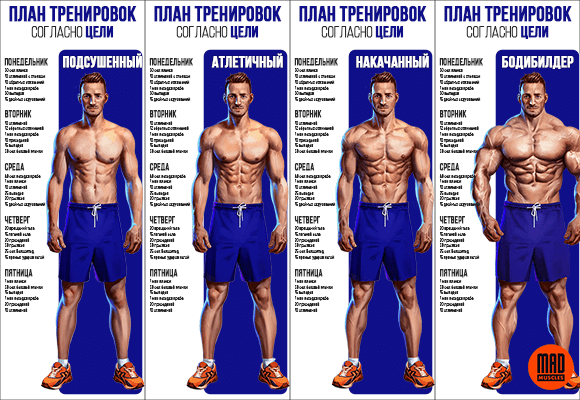
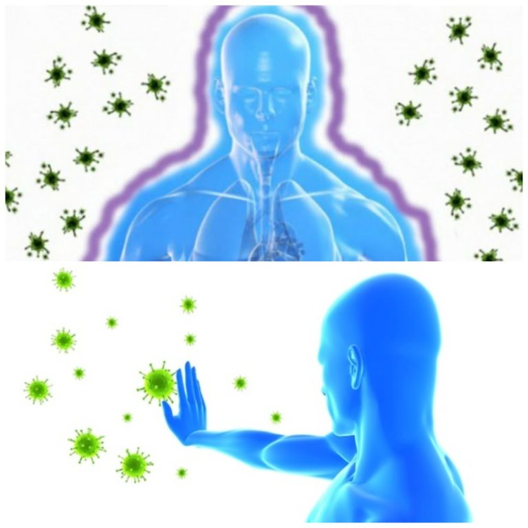

Здоровый образ жизни: основные принципы и рекомендации врачей
Понятие здоровый образ жизни включает в себя целый комплекс составляющих компонентов. Это не просто какая-то диета или занятия спортом. ЗОЖ — стиль жизни, направленный на омоложение и оздоровление всего организма, отказ от вредных привычек, создание режима дня, в котором есть место для полноценного отдыха, продуктивной работы и физической активности.
Здоровый образ жизни делает возможным воплощение в жизнь многих планов и идей. А придерживающиеся его люди полны бодрости, здоровья, сил и энергии. Крепкое здоровье и хороший иммунитет, полученные при соблюдении принципов ЗОЖ позволят долгие годы наслаждаться жизнью и получать от неё максимальное удовольствие.
Давайте разберёмся, что такое здоровый образ жизни, какие основные принципы и компоненты он в себя включает.
Преимущества здорового образа жизни
Данные многочисленных исследований показывают, что здоровье человека в любом возрасте более чем на 50 % зависит от образа жизни. Другими факторами, которые влияют на состояние организма в порядке убывания стоит считать окружающую среду и наследственность, уровень здравоохранения и жизни человека. Соблюдение ЗОЖ – ключ к хорошему самочувствию в любом возрасте. Специалисты выделяют множество его преимуществ, отвечающих на вопрос, чем полезен здоровый образ жизни:
- укрепление иммунитета и снижение заболеваемости вирусными и инфекционными недугами;
- достижение активного долголетия и сохранение даже в старости дееспособности и подвижности;
- снижение риска развития хронических заболеваний, увеличение длительности периода ремиссий;
- избавление от плохого настроения, депрессий и стрессов;
- активное участие в социальной и семейной деятельности;
- возможность заниматься любимым делом даже в старости;
- ежедневно вставать и ощущать себя полным сил и энергии;
- подавать правильный пример родственникам и детям;
- иметь красивое тело и чистую кожу без прыщей и морщин;
- увеличение возраста появления первых возрастных изменений в организме;
И это далеко не весь перечень положительных результатов, которые достигаются, если соблюдать правила здорового образа жизни. Ещё ни один человек, продержавшийся на такой системе более 1-2 месяцев, не пожалел о когда-то принятом решении и своём знакомстве с ЗОЖ.
Составляющие ЗОЖ
Здоровый образ жизни включает множество разных компонентов, затрагивающих все сферы человеческой жизни. Их соблюдение поможет улучшить здоровье и прибавить бодрости всей семье.
Специалисты выделяют следующие основные составляющие здорового образа жизни:
- занятия спортом;
- полноценный отдых;
- сбалансированное питание;
- укрепление иммунитета;
- соблюдение правил личной гигиены;
- отказ от вредных привычек;
- хорошее эмоционально-психическое состояние.
Давайте поговорим подробнее о каждом из них. Это поможет составить представление, что такое здоровый образ жизни и его составляющие, что нужно делать, чтобы как можно дольше оставаться бодрым, здоровым, красивым и молодым.
Сбалансированное питание
Любому из нас известно, что еда оказывает на человека огромное воздействие. И от того, что мы включаем в свой рацион, как это готовим и едим, зависит многое. Человек, питание которого сбалансированно, не страдает от дефицита витаминов и минералов, лишнего веса, чувства дискомфорта в животе. Кроме того, при переходе на сбалансированное питание нормализуется работа всех органов и систем, становится лучше самочувствие, появляется лёгкость. Вот основные рекомендации по здоровому жизни и питанию, которые дают специалисты:
- Рацион питания должен быть разнообразным, включать в себя молочные и мясные продукты, свежие овощи, фрукты, ягоды и зелень, бобовые и зерновые, морепродукты и рыбу. Принципы здорового образа жизни пропагандируют отказ от фаст-фуда, сдобы и чрезмерного употребления сладостей, замену белого хлеба, выпечки на ржаной и отрубной хлеб.
- Достаточное потребление жидкости. Для среднего взрослого человека нормой считается 2 л чистой воды в день в обычное время и 3 л – в жаркое. Важно отказаться от вредных напитков: растворимого кофе, чая с ненатуральными добавками и ароматизаторами, сладкой газировки, алкоголя, коктейлей с красителями и улучшителями вкуса. Чистую воду рекомендуется пить за 20-30 минут до еды или же спустя час после приёма пищи.
- Каллорийность суточного рациона не должна превышать норм. Для похудения рекомендуется сократить этот показатель на 500-600 ккал в день. Суточная калорийность рациона у каждого своя и должна рассчитываться индивидуально. В среднем этот показатель для взрослого человека – 2200-2600 ккал.
- Режим питания также имеет огромное значение. Забудьте об объеданиях на ночь или постоянных перекусах в виде гамбургеров и бутербродов. Начните придерживаться режима дня, в котором примерно в одно и то же время у вас завтрак, второй завтрак, обед, полдник и ужин. Причём наиболее калорийную пищу потребляйте на завтрак и обед.
- Всю пищу кушайте медленно и тщательно её пережевывайте. Так вы быстрее насытитесь, получите от еды удовольствие, а все полезные вещества лучше усвоятся организмом. НЕ ешьте на бегу. Во время еды выключите телевизор, оторвитесь от компьютера, отложите в сторону телефон.
- Готовьте только на 1-2 раза, потребляйте всегда свежие продукты. Лучше несколько раз сходить в магазин или на рынок, чем стараться больше наготовить, а значит, и съесть, чтобы купленные овощи-фрукты не пропали.
- Ищите что-то новое, вносите изюминку в привычный рацион. Красиво сервируйте стол, украшайте даже самые простые блюда, делайте так, чтобы еду хотелось съесть, она выглядела аппетитна и аккуратно. Особенно эти правила здорового образа жизни хорошо работают в детском возрасте. Аппетитный омлет в виде смешной рожицы или порция каши, украшенные кусочками мяса с зеленью съедается детьми разного возраста гораздо охотнее, даже если в привычно виде малыш на отрез отказывался есть это блюдо.
- Необходимо также следить за сочетаемостью продуктов. Например, два белковых блюда в один приём нельзя есть, так как это ухудшит усваиваемость полезных веществ.
Важно! Помните, смена стиля жизни – всегда большой стресс для организма. Для избегания негативных последствий для здоровья и эмоционального состояния вводите правила здорового образа жизни в свою семью постепенно. Например, сначала сократите порции вредных продуктов и придумайте им полезную и вкусную альтернативу. Затем постепенно откажитесь от всего вредного в рационе и больше никогда к такой еде не возвращайтесь. Вы увидите что уже спустя месяц, что ваша семья и здоровый образ жизни подружатся, а не так давно казавшийся аппетитным кремовый торт в кондитерской уже не вызывает интереса. А привычный кофе в пакетиках не сравнится по вкусу и аромату со свежеприготовленным напитком из турки или кофе-машины.
Занятия спортом
Банальная фраза «движение – жизнь» как нельзя точно отражает тот факт, что без адекватной двигательной активности здоровье и полноценная жизнь не возможны. Сегодня многие страдают от различных заболеваний опорно-двигательного аппарата, наличия лишнего веса и прочих проблем, многие из которых обусловлены как раз недостатком физической активности. Сбалансированное питание и физическая активность – основные компоненты здорового образа жизни.
А ведь на самом деле для поддержания ЗОЖ не требуется изнурительных тренировок (они как раз противопоказаны), многочасовых занятий в спортзале, посещения нескольких спортивных клубов и участия в соревнованиях. Достаточно ежедневно всей семьёй встать раньше на 20 минут, чем вы привыкли, сделать утреннюю гимнастику. А потом в течение рабочего дня отвлекаться от работы и прохаживаться.
А после работы и полноценного ужина прекрасно совершить пешую прогулку на свежем воздухе. Вечером можно также посвятить 15-20 минут йоге, пилатесу или любому другому спокойному виду спорта. Также хорошо влияют на здоровье занятия в спортзале с тренером 2-3 раза в неделю, посещение танцев, плаванье в бассейне. Если вы любите активный отдых, то вам точно понравятся велопрогулки, катание на роликах, коньках, езда на лошади, пробежки. Выбирайте любые направления спорта и наслаждайтесь самими занятиями и полученными на них результатами.
Перед первыми тренировками обязательно проконсультируйтесь со специалистом. Не всегда спорт даже при постепенном повышении нагрузок приносит пользу. Например, людям с больными суставами и позвоночником запрещено прыгать на скакалке и долго бегать, так как это создает дополнительную нагрузку и может привести к осложнениям. Также помните, что на первых порах лучше заниматься с тренером или инструктором. Он поможет избежать травм, подскажет как правильно делать те или иные упражнения.
Важно! Если вы не знаете, с чего начать здоровый образ жизни, то пересмотрите в первую очередь своё питание и двигательную активность. Именно эти составляющие принесут первые весомые плоды по оздоровлению и улучшению самочувствия.
Полноценный отдых

Здоровый образ жизни и его составляющие включают в себя помимо сбалансированного питания и двигательной активности полноценный отдых. Важно спать не менее 7-8 часов в сутки. Наиболее приемлемым временем для сна специалисты считают промежуток между 10 часами вечера и 6 часами утра. Но здесь необходимо ориентироваться на свои особенности, стиль жизни и биоритмы. Важно лишь помнить, что недостаток сна сказывается на всех сферах жизни человека, негативно отражается на работе организма, вызывает нарушения обмена веществ и гормональные сбои, а также приводит к другим проблемам.
Если ночного сна не хватает, например, при наличии грудного ребёнка родители почти всегда не высыпаются в первые годы его жизни, необходимо позаботиться о том, чтобы избавиться от этого дисбаланса. Например, важно поспать вместе с ребёнком в обед. Это же правило касается всех, у кого есть недостаток сна: студентов, людей, работающих по сменам, тех, кто засиживается допоздна и идёт рано утром на работу.
Также помните, что огромное значение имеет обстановка для сна. Желательно проводить ночной отдых в темноте и в тишине. Допускается лишь небольшой ночник и приятный звуки, которые не отвлекают: спокойная инструментальная музыка, морской прибой и пение птиц, шум дождя и прочие. Только в такой обстановке возможен полноценный отдых и правильная выработка гормонов. Также значение имеет удобство кровати. Правильно выбранная подушка и ортопедический матрас избавят вас от чувства разбитости и усталости утром, помогут сохранить здоровье позвоночника.
Всё это важные компоненты здорового образа жизни и пути их формирования могут быть самыми разными.
Но в раннем детстве и в дошкольном возрасте практически всё зависит от родителей, а многие детские привычки сопровождают человека всю его жизнь. Поэтому так важно приучить ребёнка ложиться вовремя спать и делать это в тишине, темноте и на подходящей кровати.
Укрепление иммунитета
Иммунитет – защитные силы организма, которые помогают справиться с разными видами инфекции и вирусов, оградить человеческое тело от опасных заболеваний. Чтобы сделать его крепче, необходимо своевременно делать прививки, отказаться от вредных привычек, вовремя диагностировать и лечить болезни, не заниматься самолечением при помощи лекарственных препаратов и народных рецептов. Понятие здорового образа жизни включает в себя такие укрепляющие иммунитет закаливающие процедуры, как:
- Воздушные ванны. Ежедневно прогуливайтесь на свежем воздухе, перед сном и работой в помещении проветривайте его в любое время года. Этот способ закаливания великолепно подойдёт для дошкольников и подростков.
- Солнечные ванны. Ультрафиолет помогает увеличить в организме синтез витамина D, участвующего в обмене веществ, помогает стать красивее и моложе. Но здесь важно знать меру. В противном случае возможны перегрев и солнечные ожоги.
- Обтирания. Это деликатный способ укрепления иммунитета. Проводить такие процедуры лучше начинать в летнее время года при помощи массажной рукавицы или же полотенца.
- Прогулки босиком. На ногах существуют активные точки, нажатие на которые положительно влияет на работу всех органов и систем в организме. Хождение босиком – помощь в реализации своеобразного мягкого массажа таких точек, который значительно улучшит состояние здоровья.
- Контрастный душ. Это чередование холодной и горячей воды. На первых порах лучше начинать с маленькой разницы температур. Процедура полезна в любом возрасте, улучшает состояние сосудов, способствует укреплению иммунитета.
- Обливание холодной водой. Этот способ требует подготовки. После процедуры важно обтереться насухо полотенцем.
- Моржевание. Этот вид закаливания полезен только при правильно применении. А перед проведением таких процедур необходимо проконсультироваться со специалистом.
Такие способы реализации ЗОЖ, кроме моржевания, подходят для всей семьи, в том числе для подростков и детей. Это лучшая профилактика различных простудных и вирусных заболеваний, которые так часто возникают в холодное время года.
Эмоционально-психическое состояние
Стрессы и переутомления, плохое настроение и депрессии негативно сказываются на работоспособности и здоровье человека любого возраста. Помимо плохого самочувствия и нежелания что-либо делать появляется упадок сил, грусть, раздражительность и агрессивность. Многозадачность на работе, отсутствие времени «на себя», необходимость выполнения кучи рутинных дел, которые не приносят удовольствия, также не помогают улучшению здоровья и здоровому образу жизни. Негатив способен накапливаться годами, отравляя человека изнутри и мешая ему жить.
При соблюдении здорового образа жизни необходимо пересмотреть и эту сторону ежедневной реальности. Важно навести порядок и позаботиться о том, чтобы каждый человек в семье чувствовал комфорт, не страдал от ущемлений и переутомлений. Специалисты рекомендуют придерживаться следующих принципов:
- Позитивное мышление. Если в вашем доме нытьё и жалобы на жизнь – это норма, то время всё изменить.
Постарайтесь даже в трудностях и сложностях видеть позитив, поддерживать друг друга и стараться помогать
найти что-то хорошее.
- Здоровая общительность. Не надо стараться разговорить незнакомого человека на остановке или где бы то
ещё,
но если к вам обратились за советом или с просьбой, то стоит продолжить диалог. Также важно общение
внутри
семьи. Желательно после работы не расходиться по своим комнатам и отвлекаться на гаджеты и компьютеры, а
посидеть вместе поговорить у кого что произошло интересного за день, какие факторы волнуют или
интересуют.
Активное времяпрепровождение, например, пешие прогулки, также помогают быть более коммуникабельным.
- Контроль над эмоциями и выражение их в нетоксичной форме. Так, если вы чувствуете дискомфорт, боль,
гнев,
недовольство, причиной которого стал один из членов вашей семьи, то не надо замалчивать проблему, но
агрессивно себя вести тоже нельзя. Информация о здоровом образе жизни рекомендует в спокойной форме
высказать родному свои переживания и мысли, причём желательно без нравоучений и в виде «Я-сообщений».
Тогда,
скорее всего, удастся избежать конфликта и убрать раздражающий фактор.
- Психическое здоровье. Необходимо позаботиться о себе. Исключите из жизни стрессы и переживания, по
возможности плохое настроение и депрессию, комплексы и недовольство жизнью. Если вы сами с этим не
справляетесь, то обратитесь за помощью к специалисту.
Важно! В чем заключается здоровый образ жизни и как его реализовать – сложные вопросы. И пройдёт не один месяц, пока вы сможете удерживать баланс всех составляющих ЗОЖ. Поэтому не переживайте, если съели что-то вредное или же поступили неправильно. Главное, вы это увидели и осознали, а значит, всё можно исправить.
Личная гигиена
Здоровый образ жизни семьи не может обойтись без соблюдения личной гигиены, которая включает в себя:
- чистку зубов и слежение за их здоровьем;
- поддержание в чистоте предметов личной гигиены, одежды, обуви;
- регулярные водные процедуры, в том числе приём ванны или душа, умывание, полоскание зубов после приёма пищи;
- своевременное мытьё посуды и прочие мероприятия, направленные на поддержание частоты дома.
Советы по здоровому образу жизни включают в себя и слежение за окружающей обстановкой. Если в доме полно хлама, вещей, которые никто не носит, сломанных бытовых приборов, то в такой обстановке сложно вести здоровый образ жизни. Необходимо выкинуть или раздать нуждающимся всё ненужное, по необходимости продать то, за что ещё можно выручить деньги. Тогда вы увидите, как в квартире стало легче дышать, стала не так страшна и утомительна уборка.
Формирование здорового образа жизни
Формирование здорового образа жизни у подростков и детей – важнейшая задача семьи и школы. Дети должны с ранних лет знать и понимать, какие основные компоненты ЗОЖ, как их правильно реализовать так, чтобы все полезные процедуры были в радость и не приносили дискомфорта. Основные пути формирования здорового образа жизни включают в себя:
- регулярные занятия спортом на уроках физкультуры и всей семьёй;
- поездки в оздоровительные лагеря и санатории;
- формирование здорового образа жизни у населения посредством средств масс-медия, организации соревнований и конкурсов;
- регулярное посещение врачей для проведения профилактических осмотров;
- помощь подросткам и детям в выборе профессии, которая будет нравиться и приносить доход;
- подбор рациона питания для всей семьи с учетом вкусов и предпочтений каждого её члена;
- профилактика болезней с раннего детства в виде прививок, закаливания;
- с малых лет обучение правилам личной гигиены и привлечение к домашним обязанностям.
Важно ребёнку не только рассказывать, что входит в понятие здоровый образ жизни, какие направления оздоровления существуют, но и показывать соблюдение принципов ЗОЖ на собственном примере. Формирование здорового образа жизни у дошкольников – важный компонент воспитания и обучения. Вся семья участвует в этом процессе.
Помните, необходимо не только знать, что включает в себя понятие здоровый образ жизни, но и выполнять основные принципы этой системы. Причём все действия должны быть в радость и не приносить дискомфорта. Не стоит насильно и в короткие сроки внедрять в свою семью сразу все основные компоненты здорового образа жизни, особенно если ранее вы их никогда не соблюдали. Но и медлить нельзя, так как каждая выкуренная сигарета, день без двигательной активности или не почищенных зубов – серьёзный вред здоровью вас и ваших домочадцев. Здоровый образ жизни сложен только на первых порах, но потом он приносит лёгкость, хорошее самочувствие и настроение. А со временем при соблюдении его всей семьёй вы заметите, что стали меньше болеть, чувствуете себя лучше и спокойнее, смогли достичь целей, которые казались раньше недостижимыми.